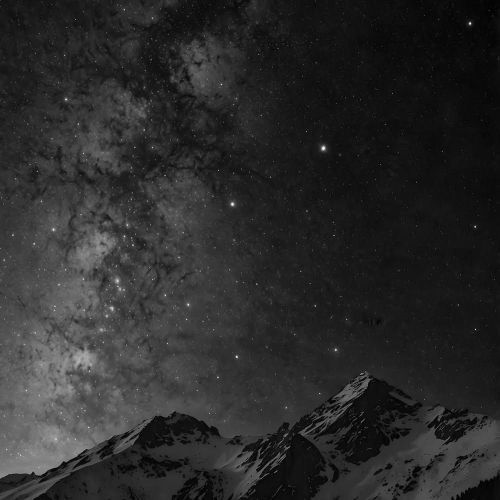
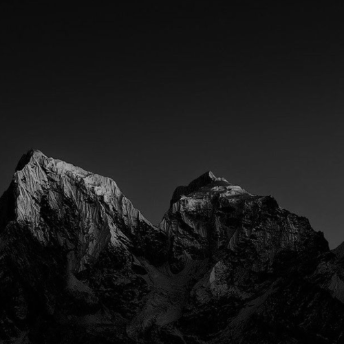
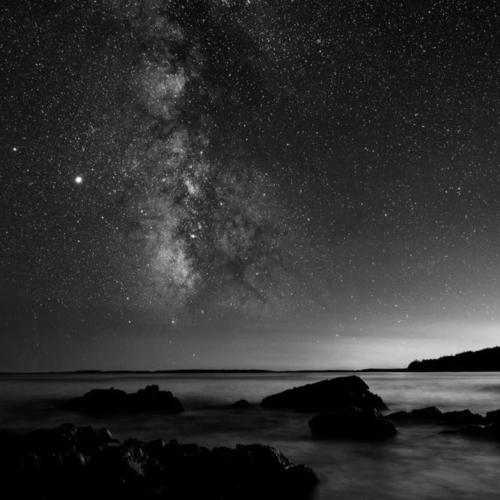
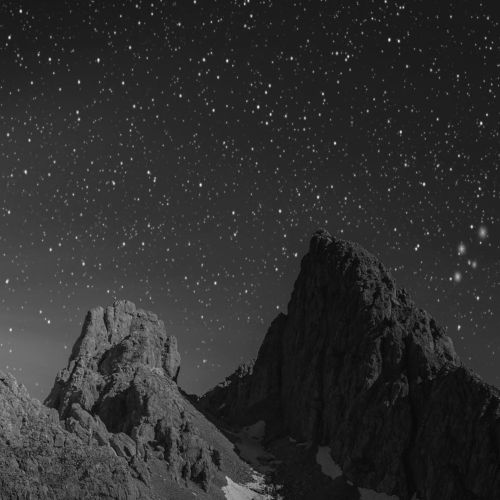
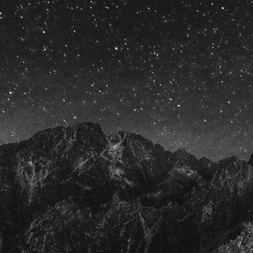
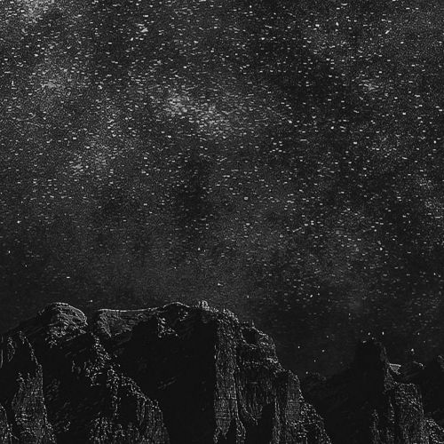
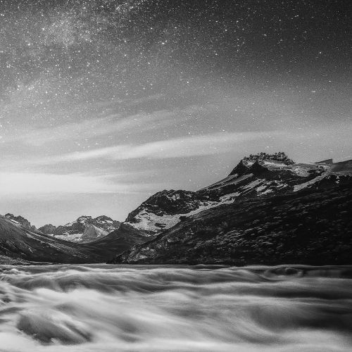
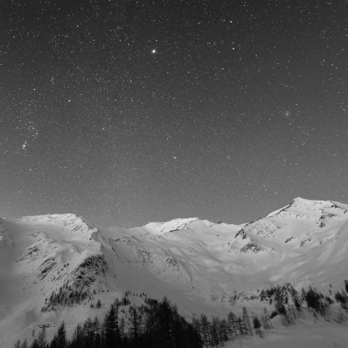
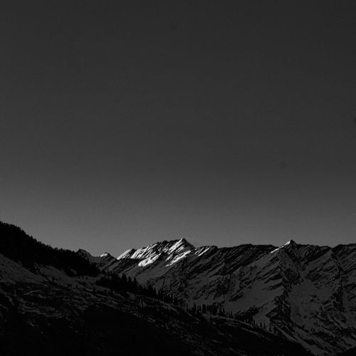
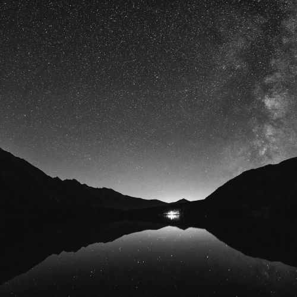

Gwiezdna noc nad szczytami

Surowe oblicze gór

Droga Mleczna nad wodą

Skaliste wieże nocą

Niebo nad granią

Spojrzenie w kosmos

Potok chmur pod gwiazdami

Zimowa panorama nocy

Światło na szczytach

Lustrzane odbicie nocy